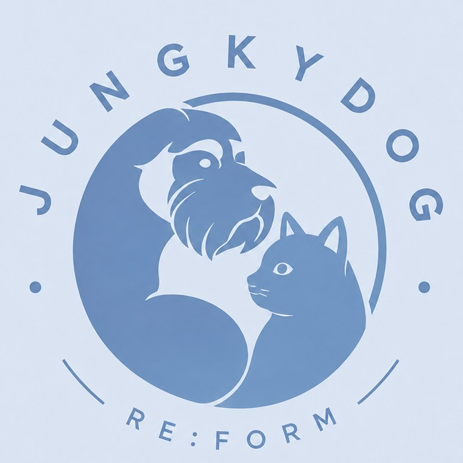

01브랜드 소개Brand
우리는 하네스를 만드는
브랜드가 아닙니다.
우리는
우리 아이와 함께하는
시간을 디자인합니다.
정키독은 리폼과 업사이클링을 통해
반려견과 반려묘의 삶을 더 편안하고 아름답게 만드는
프리미엄 하네스 아틀리에입니다.

JUNGKYDOG
RE:FORM ATELIER
 we design a time with you
we design a time with you

02철학Philosophy
좋은 디자인은
오래 사용할 수 있어야 합니다.
버려질 수 있는 옷과 소재에 새로운 가치를 더해,
시간이 지나도 변치 않는 디자인을 만듭니다.
한 땀 한 땀 정성을 담아
세상에 하나뿐인 작품을 완성합니다.
RE:FORM리폼·업사이클링으로
새로운 가치를 창조
새로운 가치를 창조
HANDCRAFT장인의 손길로
정성스럽게 제작
정성스럽게 제작
COMFORT아이의 체형과
라이프스타일 고려
라이프스타일 고려
SAFETY엄선한 소재와
꼼꼼한 품질 관리
꼼꼼한 품질 관리
03미션Mission
Protect Memories.
Protect Pets.
Protect Earth.
소중한 추억을 지키고,
우리 아이의 행복을 지키며,
지구의 미래를 지킵니다.

오래도록 함께

행복을 위해

더 나은 환경을 위해

04대표 이야기Founder’s Story
“작은 손끝에서
하나의 작품이 시작됩니다.”
피팅부터 디자인,
리폼과 업사이클링을
모두 직접 해왔습니다.
버려질 원단·옷과 소재가 새로운 생명을 얻고,
우리 아이와 보호자가 오래도록 행복해지는 것.
그것이 제가 이 일을 멈추지 않고 계속하는 이유입니다.
정훈숙정키독 대표

05심볼마크Identity
서로 기대어 있는
두 아이의 모습
정키독의 심볼은 슈나우저와 러시안블루가 서로 기대어 있는 모습입니다. 원 안에 담긴 두 실루엣은 함께 살아가는 반려동물과 보호자의 관계를 뜻하며, 둘레의 RE:FORM은 다시 짓고 다시 쓰는 정키독의 방식을 나타냅니다.
보호안전하게 감싸는 구조
조화다른 존재가 함께 사는 균형
신뢰오래 쓸 수 있는 품질
따뜻함손으로 만드는 온도
NEXT STEPContact
우리 아이에게 어울리는
하네스를 의뢰하세요
리폼 상담, 업사이클링 제작, 클래스 예약을 한 곳에서 시작하세요.